- Which of the following are the nets of a cube? First, try to answer by visualisation. Then, you may use cutouts and try.
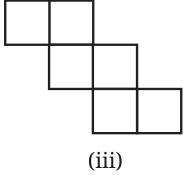
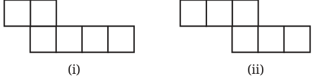

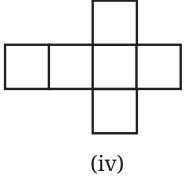
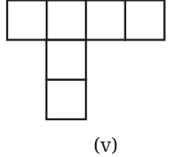
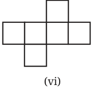
- A cube has 11 possible net structures in total. In this count, two nets are considered the same if one can be obtained from the other by a rotation or a flip. For example, the following nets are all considered the same - Find all the 11 nets of a cube.
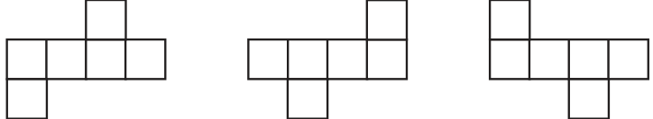
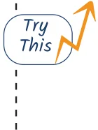
- Draw a net of a cuboid having sidelengths:
- 5 cm, 3 cm, and 1 cm
- 6 cm, 3 cm, and 2 cm Let us find out the nets of other solids. A tetrahedron whose faces are equilateral triangles is called a regular tetrahedron.
What is a net of a regular tetrahedron? Which of the following are nets of a regular tetrahedron?
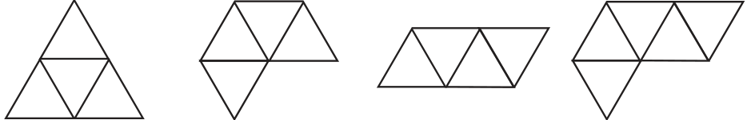
Are there any other possible nets? A regular tetrahedron has only 2 possible nets.
Draw a net with appropriate measurements that can be folded into a regular tetrahedron. Verify if it works by making an actual cutout.
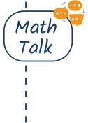
Draw a net with appropriate measurements that can be folded into a square pyramid. Verify if it works by making an actual cutout.

What is the net of a cylinder? If the circular faces of a cylinder are unfolded, and if a cut is made along the height of the cylinder, as shown in the figure below, then we get
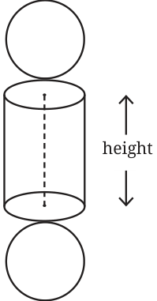
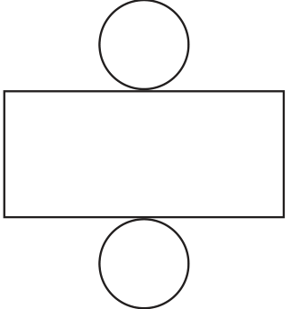
What are the sidelengths of the rectangle obtained?
How will the net of a cone look?
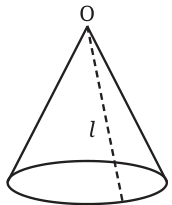
If the cone is slit open along the line l and then unrolled, what will we get? Observe that all the points on the boundary of the base circle are at equal distances from ‘O’. So after unrolling the cone, the boundary of the net will be a portion of a circle with centre O.
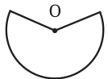
What surface do you construct by using the above net, in which O is not the centre of the boundary circle? Make a physical model to help you answer this question!
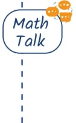
Draw a net with appropriate measurements that can be folded into a triangular prism. Verify that it works by making an actual cutout.

Here is a solid called the octahedron, made by joining two square pyramids at their square bases.
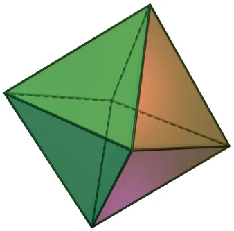
Can you visualise its net? This is one of its nets.
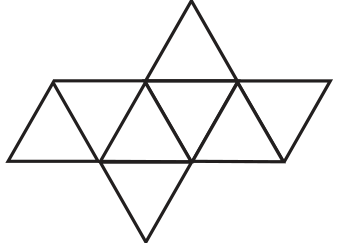
Taking all the triangles in the net to be equilateral, make a cutout of the net and fold it to form an octahedron.
As in the case of cubes, an octahedron too has 11 different nets. So far, we have seen solids whose faces are all equilateral triangles (regular tetrahedrons), and all squares (cubes). Does there exist a solid whose faces are all pentagons? Interestingly, the answer is yes! This solid is called a dodecahedron. This solid too can be made from a net! Mathematicians have been even able to determine exactly how many nets a dodecahedron has \(- 43,380\).
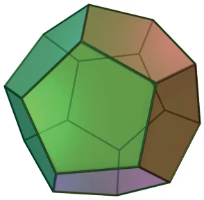
Dodecahedron

Net of a sphere? Experiment and see if you can make a paper cutout that can perfectly wrap around a ball without leaving any wrinkles, gaps or overlaps.